Describe Data and EDA
Zhaoxia Yu
Import Data
Data cycle

Image from Grolemund, G., & Wickham, H. (2018). R for data science (CC BY-NC-ND 3.0).
Alzheimer’s Data
Univariate analysis
We begin by examining one variable at a time.
The goal is to gain a general understanding of each variable by:
identifying the possible values,
understanding how the values are distributed, and
observing how the variable varies across individuals in the sample.
In summary, we are exploring the distribution of each variable.
Inspect Data using head()
Inspect Data using tail()
Inspect Data using glimpse()
Rows: 2,700
Columns: 7
$ id <chr> "S060833", "S932623", "S755478", "S852291", "S011143", "S069…
$ diagnosis <fct> 0, 0, 0, 0, 1, 0, 0, 2, 0, 2, 0, 0, 0, 1, 0, 1, 2, 2, 2, 1, …
$ age <int> 74, 56, 77, 74, 75, 72, 64, 78, 73, 81, 66, 65, 66, 73, 78, …
$ educ <int> 12, 16, 18, 20, 14, 16, 16, 17, 18, 13, 16, 16, 17, 20, 13, …
$ female <fct> 0, 1, 1, 1, 0, 1, 1, 0, 1, 0, 1, 1, 0, 1, 1, 1, 0, 0, 1, 1, …
$ height <dbl> 65.0, 62.0, 65.0, 62.0, 62.0, 61.8, 60.0, 69.0, 65.0, 71.0, …
$ weight <int> 233, 110, 137, 112, 127, 141, 124, 152, 131, 197, 134, 144, …Check the Number of Columns and Rows
Variable Types
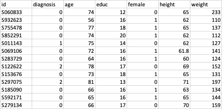
NumericalVariables
For numerical variables, we can meaningfully compute statistics such as the mean, minimum, and maximum.
age,height, andweightare numerical variables because their values are numeric and the numbers have their usual quantitative meaning.
Categorical variables:
femalemay be coded as 0, and 1, but these numbers are simply labels.Such variables are categorical variables, whose values belong to a finite set of categories.
Although categorical variables are often encoded using numbers, the numeric codes do not represent quantities and arithmetic operations (e.g., averaging) are not meaningful.
Categorical Data
Bar Graphs
Bar graphs are commonly used to visualize categorical variables.
Each bar represents a category, and its height indicates either:
- the frequency (number of observations), or
- the relative frequency (proportion of observations)
for that category.
Bar Graph: Frequency
Bar Graph: Relative Frequency
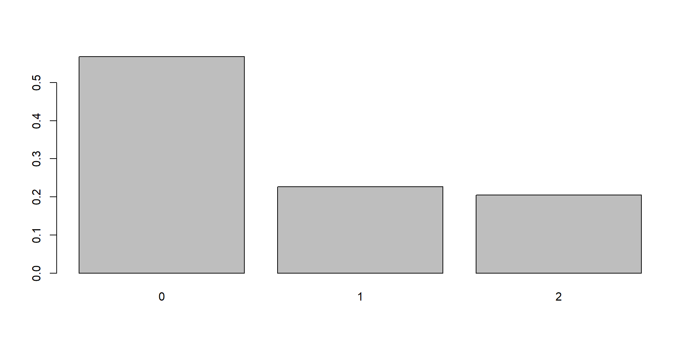
- The height of each bar represents the proportion of observations in that category.
- Relative frequencies always sum to 100% (or 1).
Useful Statistics
For a categorical variable, the most useful summary statistics are:
Frequency: Number of observations in each category \(n_c\).
Relative frequency: Proportion (or percentage) of observations in each category \(p_c = \frac{n_c}{n}\).
Mode: The category with the highest frequency.
Tip
For categorical variables, the mean and standard deviation are not meaningful.
Numerical Data
Uesful Statistics
- Location: Central tendency (mean, median)
- Spread: Dispersion (range, variance, SD)
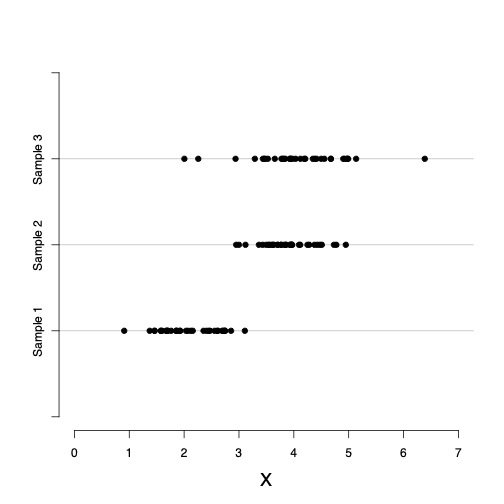
Mean
\[\bar{x} = \frac{\sum x_i}{n}\]
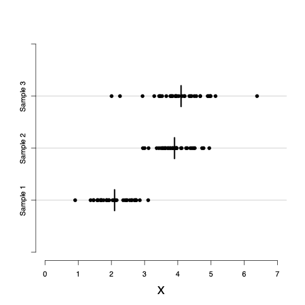
Median
- The median is a measure of the center (location) of a numerical variable.
- It is less sensitive to outliers than the mean.
- To find the median:
- Sort the observations from smallest to largest.
- Select the middle value.
- If the sample size (n) is odd, the median is the middle observation.
- If (n) is even, the median is the average of the two middle observations.
Is the Center Enough?
- Consider the following blood pressure measurements (mmHg) for two patients:
Both patients have the same mean and same median.
However, Patient B has much greater variability in blood pressure.
Measures of center alone do not fully describe a distribution. We also need measures of spread.
Standard Deviation and Variance
Two common measures of spread are the sample variance and the sample standard deviation.
They measure how far the observations tend to be from the sample mean.
For each observation \(x_i\), compute its deviation from the mean: \(x_i-\bar{x}.\)
The sample variance and standard deviation are calculated from these deviations.
Variance and Standard Deviation
Sample variance: \[s^2 = \frac{\sum (x_i - \bar{x})^2}{n-1}\]
sample standard deviation (SD): \[s = \sqrt{s^2}\]
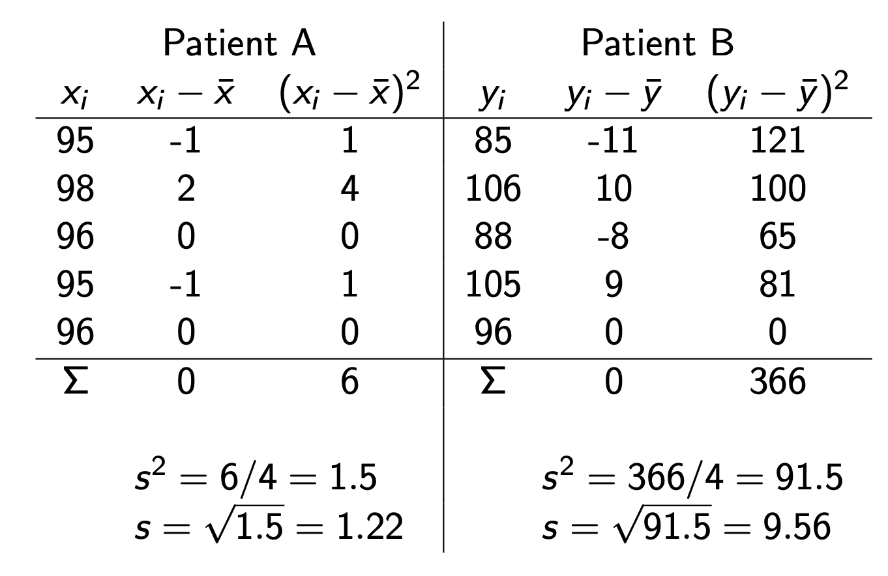
Quantiles
The (q) quantile is also called the (100q)th percentile.
Examples:
| Quantile | Percentile | Name |
|---|---|---|
| 0.25 | 25th | First quartile (Q1) |
| 0.50 | 50th | Median (Q2) |
| 0.75 | 75th | Third quartile (Q3) |
Quartiles
The ordered observations can be divided into four equal parts using the 25th, 50th, and 75th percentiles.
These three values are called the quartiles:
- Q1 (25th percentile): First (lower) quartile
- Q2 (50th percentile): Median
- Q3 (75th percentile): Third (upper) quartile
The distance between Q1 and Q3 is called the interquartile range (IQR): \(\mathrm{IQR}=Q_3-Q_1.\)
Measures of spread
We have learned variance and standard deviation as measures of spread.
Two other measures:
- Range = Maximum − Minimum
- IQR = Q3 − Q1
Five-Number Summary
- The five-number summary:
- Minimum
- First quartile (Q1)
- Median (Q2)
- Third quartile (Q3)
- Maximum
- The five-number summary provides a concise description of the distribution using the 0, 0.25, 0.50, 0.75, and 1 quantiles.
Five-Number Summary and Boxplot
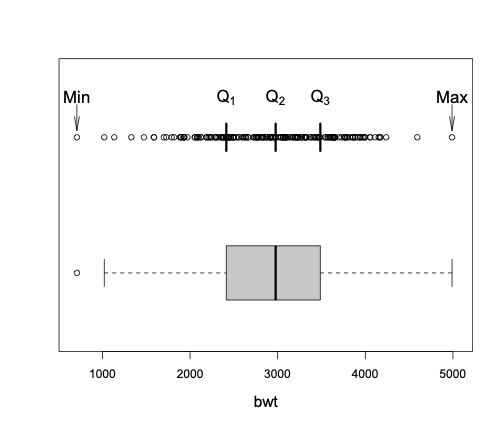
Interpretation of Boxplot
Median: line inside the box
Q1 and Q3: bottom and top of the box
IQR: height of the box \(\text{IQR} = Q_3 - Q_1\)
Whiskers: extend to the most extreme observations within 1.5 × IQR of Q1 and Q3
Outliers: observations beyond the whiskers, shown as individual points
Histogram: Frequency or Relative Frequency
Histograms provide another useful visual representation of the distribution of a numerical variable.
A histogram displays the distribution of a numerical variable by grouping observations into intervals (called bins).
The height of each bar can represent the frequency, relative frequency \(p_c=\frac{n_c}{n}\), or the percentage \((100\times p_c)\) of observations in that interval.
Histogram: Density
In statistics, histograms are often drawn using density rather than relative frequency.
The density is the relative frequency per unit interval: \[f_c=\frac{p_c}{w_c},\]
where \(w_c\) is the width of interval \(c\).
Note that \(f_c\) could be greater than 1; it is not a probability, but the area of the bar is a probability. The total area of the histogram is 1.
Shape of a Histogram
The shape of a histogram shows us how the observed values spread around the location.
Symmetric around its location: when the densities are [almost] the same for any two intervals that are equally distant from the center.
Left-skewed: stretched to the left. Example: age at death.
Right-skewed: stretched to the right. Example: house income.
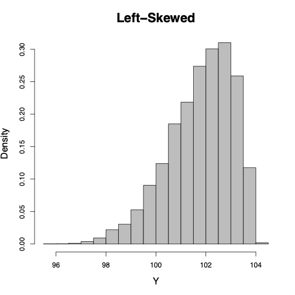
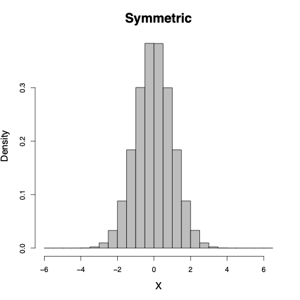
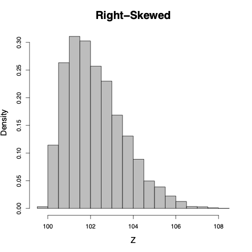
Case Study: Alzheimer Data
Alzheimer Data: Univariate Analysis of Age
We will use the age variable to practice exploratory data analysis (EDA).
Our goals are to answer the following questions:
- What is the center of the distribution?
- How much variability is there?
- What is the shape of the distribution?
- Are there any unusual observations (outliers)?
Summary Statistics
Min. 1st Qu. Median Mean 3rd Qu. Max.
21.00 64.00 72.00 70.05 78.00 100.00 - What is the minimum age?
- What is the maximum age?
- What is the median age?
- What is the interquartile range (IQR)?
Mean and Standard Deviation
- What does the standard deviation tell us?
Histogram of Age
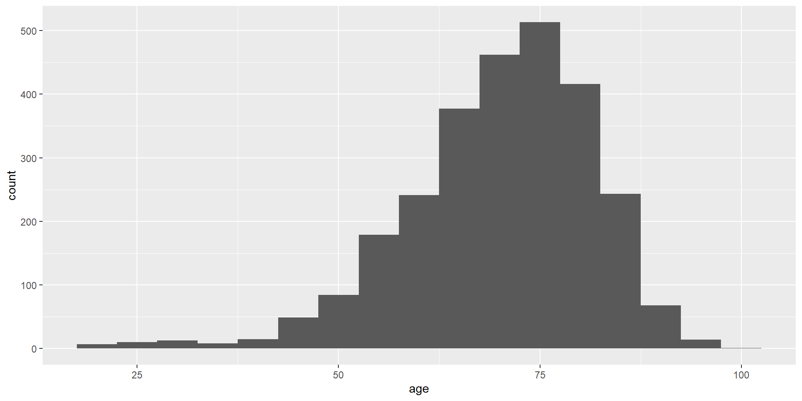
- Is the distribution symmetric or skewed?
- Are there multiple peaks?
Boxplot of Age
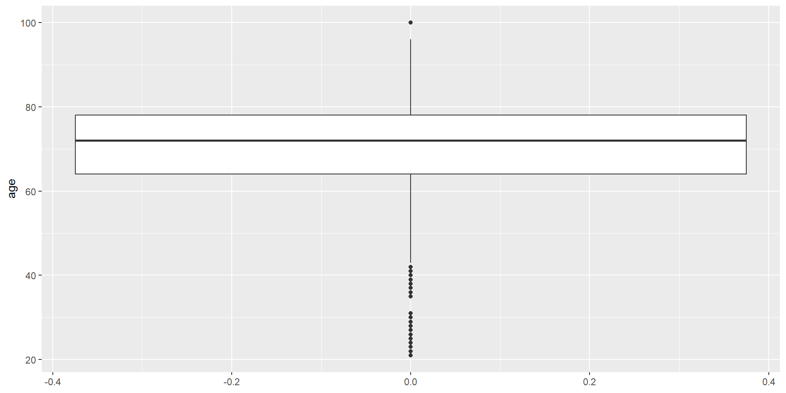
- What is the median age?
- What is the interquartile range?
- Are there any potential outliers?
What Have We Learned?
From the histogram, boxplot, and summary statistics, describe the distribution of age.
Consider:
- Center (mean and median)
- Spread (SD and IQR)
- Shape (symmetric or skewed?)
- Outliers
Alzheimer Data: Univariate Analysis of female
We will use the female variable to practice EDA for a categorical variable.
Our goals are to answer the following questions:
- What are the possible categories?
- How many observations are in each category?
- What proportion of the sample belongs to each category?
- Which category is the most common?
Frequency Table
- What are the two categories?
- Which category has the larger frequency?
Tip: Understand the Coding
Categorical variables are often stored using numeric codes.
For the female variable:
- 0 = Male
- 1 = Female
The numbers are labels, not quantities. Always check the coding before interpreting the results.
Relative Frequency
0 1
0.4262963 0.5737037
0 1
42.6 57.4 - What proportion of the participants are female?
- Do the proportions sum to 1?
Bar Graph
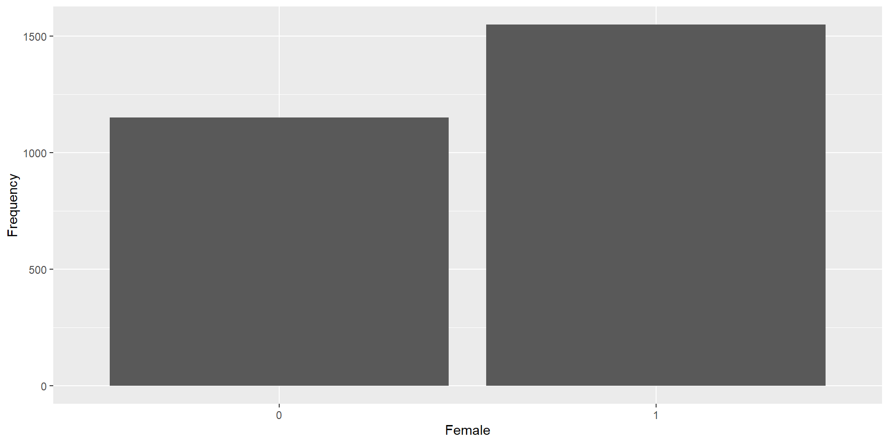
- Which category has the taller bar?
- Does the graph agree with the frequency table?
Bar Graph: Relative Frequency
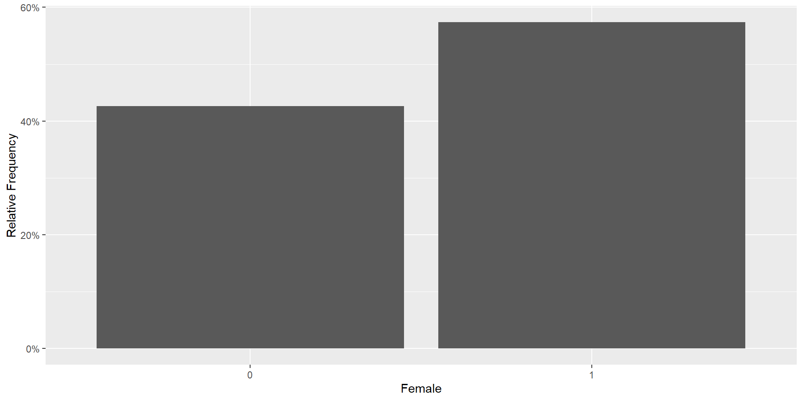
- Approximately what percentage of participants are female?
- Is the sample balanced by sex?
What Have We Learned?
Describe the distribution of female.
- Categories
- Frequency of each category
- Relative frequency of each category
- Most common category (mode)
EDA workflow depends on the variable type:
| Numerical Variable (Age) | Categorical Variable (Female) |
|---|---|
| Mean, Median | Frequency, Relative Frequency |
| Standard Deviation, IQR | Mode |
| Histogram | Bar Graph |
| Boxplot | Frequency Table |
Reporting Summary Statsitics in Scientific Studies
Typical Summary Table
| Variable | Summary |
|---|---|
| Age (years) | Mean ± SD (or Median [IQR]) |
| Female | n (%) |
There are packages to automate the creation of summary tables.
EDA Is More Than a Table 1
A Table 1 provides a useful summary of the data, but it is only the beginning of exploratory data analysis.
EDA helps us:
- Understand the data
- Distribution, center, spread, and outliers
- Identify data quality issues
- Missing values
- Impossible or unusual values
- Coding errors and inconsistencies
- Choose appropriate statistical methods
- Is the variable continuous or categorical?
- Is the distribution approximately normal?
- Are transformations needed?
- Generate hypotheses and guide modeling
- Discover interesting patterns
- Identify potential relationships between variables
- Suggest variables to include in later analyses
Remember: Good data analysis begins with understanding the data.